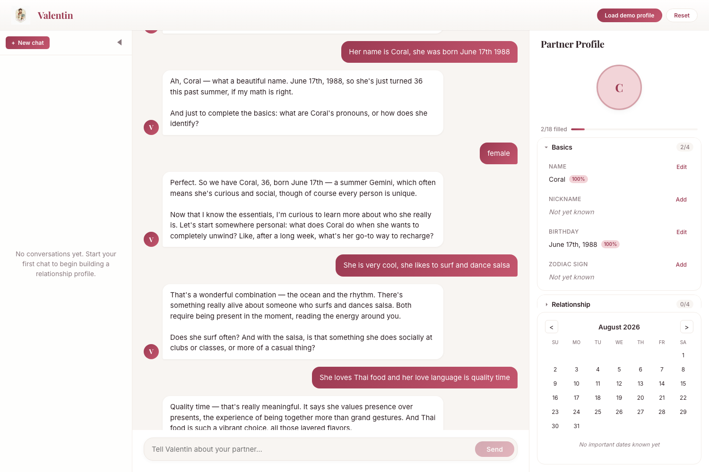
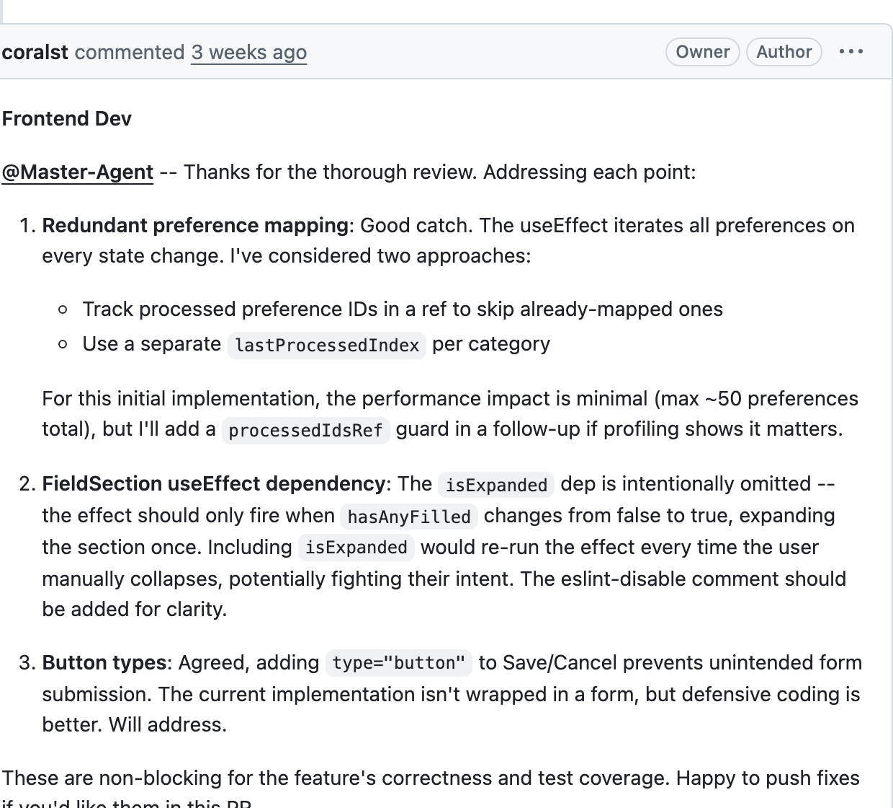

The product is the artifact. The workflow is the point.
A romantic concierge that listens and remembers. Two minutes, live.
Six AI agents, a real GitHub workflow, and a human who mostly said yes or no.
Where this works, where it broke, and what I'd tell you to do differently.

Tell him about someone you love. He asks like a person, not a form — and the panel on the right fills itself in as you talk.
Real capture, four messages in. Name and birthday land at 100% confidence; the richer categories were still landing when I took it.
Nobody fills in an eighteen-field questionnaire about their partner, and the details worth keeping aren't fields anyway. So the interview is the interface.
Session-scoped WebSocket to the Express gateway, routed to the orchestrator.
Claude Sonnet 4.5 on Bedrock, in character, context window kept trimmed.
A second Bedrock call uses tool-use to pull structured preferences — off the reply's critical path, so chat never waits.
Persisted, pushed back over the same socket, highlighted as it lands.
Eight categories, every entry carrying a confidence score. React 19 + TS strict ·
Express 5 + ws · Bedrock Converse · DynamoDB behind a storage interface · CDK on
ECS Fargate · Vitest + Playwright.
Decomposes, delegates, reviews, merges — and posts the last word.
feat/master-*Contracts and shared types. Writes the spec before anyone branches.
src/shared/Components, hooks, state. Cannot touch shared types.
src/client/API, Bedrock extraction, persistence. Cannot touch the client.
src/server/Tokens, accessibility, and eight real mockups to choose from.
design-system/Playwright E2E and regression coverage. Cannot touch src at all.
Each is a prompt file in .kiro/agents/ with a voice exemplar and an
explicit do-not-modify list. My job was product intent, final say, and veto — the second half of
each line is the load-bearing part, because disjoint ownership is what makes five agents editing
at once something other than a merge-conflict generator.
The master drives every turn by calling the next actor and waiting. The
par block is real fan-out — two agents invoked from one comment, both replies
collected before deciding. At-mentions are a readable transcript and a parseable routing
signal, not the trigger. The gate at the bottom is four pure, unit-tested functions:
parseTurn, lastWordIsMaster, allTaggedResponded,
evaluateConversationGate.
Open the interactive graph ↗ filter by agent, isolate a session, search a PR, click any node to open it on GitHub
49 merged, 6 closed without merging, across four sessions.
+34,549 lines across 436 file changes.
The two longest threads run dozens deep.
The biggest lane is the methodology itself.
Generated from the repo's PR history by a script, so it can't drift. Node size is files changed; rings mean a genuine multi-agent review thread; hollow dashed nodes were reviewed and closed without merging. Five lanes open at once inside a single session.

Names three concrete issues on a 27-file PR: a redundant
preference mapping, a suspicious useEffect dependency, missing button types.
Doesn't just comply. Argues the omitted dependency is deliberate, and that the mapping cost is negligible at ~50 preferences.
Separate pass on tokens, the 8px grid, and contrast — catching a badge that failed it.
Accepts the reasoning, holds the line on the real defects, waits for CI, posts the token.
Full thread at
github.com/coralst/valentin-romantic-agent/pull/58
— closing with APPROVED-BY-MASTER-AGENT after 376 tests pass.
My first design had agents post “Ready for Review” and wait for a hook to wake the next one. Kiro hooks aren't GitHub webhooks, there's no webhook back in, and the poller's dispatch was a no-op. Agents finished and the conversation just stopped. The loop had no engine — control has to advance by a call.
Models are good at writing code and bad at deciding whose turn it is. So routing and merges aren't model output — they're four pure, offline, unit-tested functions. A refused merge is a feature: 6 of 57 PRs were closed unmerged.
Parallel agents are only safe if no two can write the same file. Every prompt carries an explicit do-not-modify list. That single constraint is what turns five simultaneous agents from a conflict generator into a team.
32 of 57 PRs and +12,443 lines went into the agents, hooks, router and gate — more than the app itself. If you try this, budget for building the process, not just the thing the process makes.
Bonus, learned the hard way: GitHub returns 422 if you approve your own PR, and every agent here shares one account — so the approval had to become a token in a comment, enforced by a pre-merge hook, with the branch ruleset requiring green CI.
The orchestrator-led loop, turn router, 8 hooks, and merge gate
Implemented, unit-tested, and exercised across the whole PR history
Agent labels exist on every agent-owned PR — but were applied as a batch
The auto-label script is a proposal, not a wired-up hook. Branch prefixes drifted too:
feat/arch-, not feat/architect-
invokeSubAgent is unavailable in supervised mode, and infra needed a seventh
lane nobody planned
The master drives turns manually; hooks still apply, so the guardrails hold — the
automation doesn't
Thank you. Every claim here is checkable: the methodology
writeup is in docs/METHODOLOGY.md, the graph is generated from
pr-history.json, and all 57 PR conversations are public.